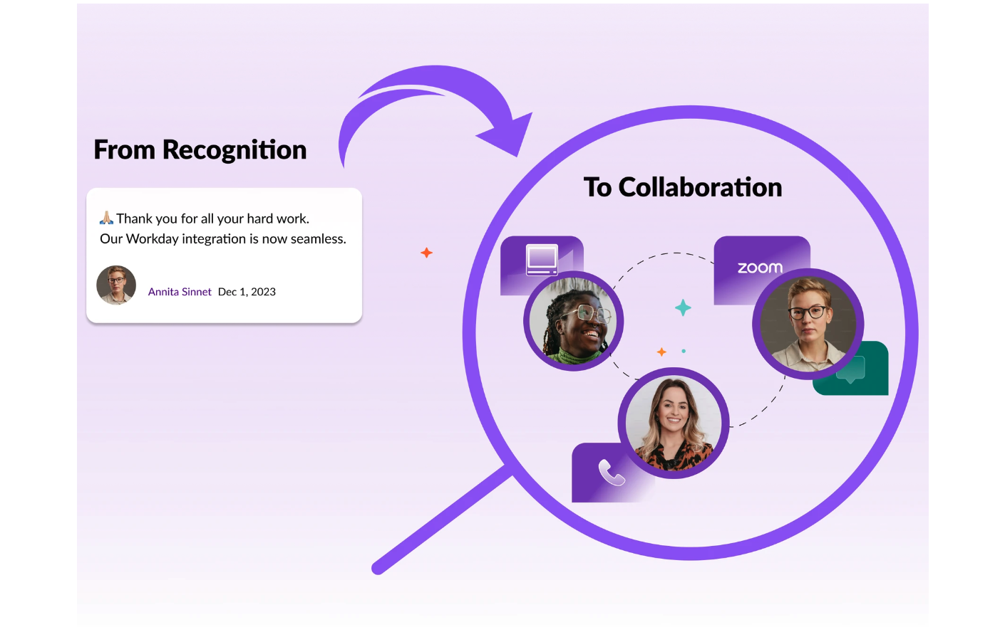
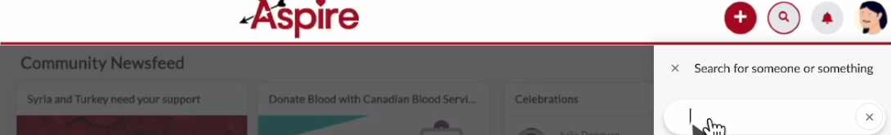

Case Study 02 — Aspire
Turning a recognition product into a collaborator finding tool
Employees struggled to find the right collaborator across a large organization. I helped transform Aspire's search into an expert-finding tool, resulting in a 25% increase in cross-departmental collaboration.
The current process was a maze of Workday directories and time-consuming interviews, leaving many feeling lost and frustrated — with no guarantee of accomplishing the goal.
* Aspire is an employee recognition platform that I helped extend into an expert-finding and collaboration tool.
Role
UX Designer
Year
2024
Duration
1 month
Team
UX/UI Designer (me), Data Scientist, Software Engineer, Data Analyst, User Researcher
Deliverables
Stakeholder interviews, data analysis, user journey map, mockups, prototypes, executive presentations, final specs, user testing
This is the final product
From Recognition to Collaboration

Discovery
Employees struggled to find the right collaborator across a large organization
The current process was a maze of Workday directories and time-consuming interviews, leaving many feeling lost and frustrated — tedious, with no guarantee of accomplishing the goal.

Current process map of employees searching for collaborators via Workday.
Activities and outputs
User interviews (10 users)
Current process mapping
Pain point analysis
Framing
Here's the problem statement I came up with using the 5Ws (Who, where, what, why, when)
Our users face challenges when trying to identify the right subject matter expert for cross-functional projects. Their current process involves using Workday, which has no project-related information. The results are time-consuming and often inaccurate.
The opportunity
We identified an opportunity to enhance collaboration through "Search"
Our data scientists revealed a wealth of information hidden within employee recognitions. When a user types in something like a project name, team name, or employee's name, the system interprets the meaning behind the words. It then compares this to the recognition data in the system, helping the search results become more relevant and valuable.
💭 My thinking
What if we could transform our recognition product from a basic name lookup to an expert-finding system? It already held records of our collective knowledge and experience. This simple question ignited a journey to reimagine Aspire's search functionality. User interviews revealed the current shortcomings.
⚠ The current state of search did NOT support keyword search

Screenshot of Aspire's existing search — returning no results for a keyword-based query.
Insight from user interviews
"I need to find people with expertise for my new project, but I'm not sure how to find them."
— Participant 1, VP Engineering
Can you imagine…
Finding the perfect collaborator for your project with just a keyword search?
Our data scientists' analysis was a key part of the discovery phase. It gave us confidence that we could expand the search capabilities — a technical solution that would make the search feature more powerful and user-friendly. For example, if someone is searching for all recognitions related to a project, the system can find the people who were involved, even if the search terms don't match perfectly.
Feasibility
Our data scientist's analysis of the search capabilities

Activities and outputs
Internal systems analysis
Data scientist consultations
Feature opportunity mapping
Alignment
Getting stakeholder buy-in was crucial for turning our vision into reality
Stakeholders were skeptical at first. They didn't see real value in the enhanced feature. Their resistance pushed us to dive deeper, gathering more evidence to support our vision.
I studied the market and competitors' products, and I realized this was an existing gap among recognition products. I spoke to 5 sales reps to see if they found any value in our recognition product's keyword search feature. They were not sure, so they started asking prospects in calls.
Sales reps reported that prospects saw a clear differentiator when they heard about a recognition product that could facilitate cross-functional collaboration.
Competitive research

Activities and outputs
Competitive market analysis
Sales rep interviews
Prospect feedback collection
Green light
Connecting user issues to business opportunities won over our stakeholders' buy-in
After stakeholders saw the evidence and realized there was a demand for this feature in the market, they gave us the green light to add it to the roadmap. To build a prototype, I designed a user flow that mapped out the screens and actions the user needed to perform to find and connect with the right expert.

Validation
I designed a lo-fi prototype, tested it with 10 internal users, and presented the feedback to my team
Activities and outputs
Low-fidelity prototyping
User testing sessions (10 users)
User Flow
Here's how most users interacted with the prototype
Participants were asked to search for the keyword "Workday." The prototype then pulled up many recognitions containing the keyword. They were impressed by how quickly and easily they could find related info, and said that they would definitely utilize this feature.

Wireflow: Storyflow
Participants asked if there was a way they could confirm the employee's subject matter expertise when they got to their profile page, so they could feel more confident about contacting them.
Iteration
Reflecting on user feedback, I recommended we add a section called "I'm a resource for" to the employees' profile page
Employees could update their areas of expertise or past projects, giving colleagues the confidence to reach out.

Connecting the dots
Users could connect with the other employee through email, phone, or chat
I recommended that we hyperlink Teams for easy chat access because user testing revealed that chat was the users' preferred contact method within the company. Users were then directed to Teams' new chat window to contact the selected employee.

Activities and outputs
Interactive prototype
Hi-Fi Design
Launch
The launch was more than just a technical achievement; it was a cultural shift towards more efficient, knowledge-driven collaboration across the company.

Impact & results
The organization observed a
25% increase in cross-departmental collaboration
The ripple effects extended beyond our organization
Our sales team reported increased interest from prospects, with the enhanced Aspire feature becoming a key differentiator in pitches — we had not just improved internal collaboration, we had strengthened our product's position in the market.
The leadership team was impressed by the initiative and its results, recognizing our team's efforts in a company-wide announcement — a shout-out for enhancing our product.